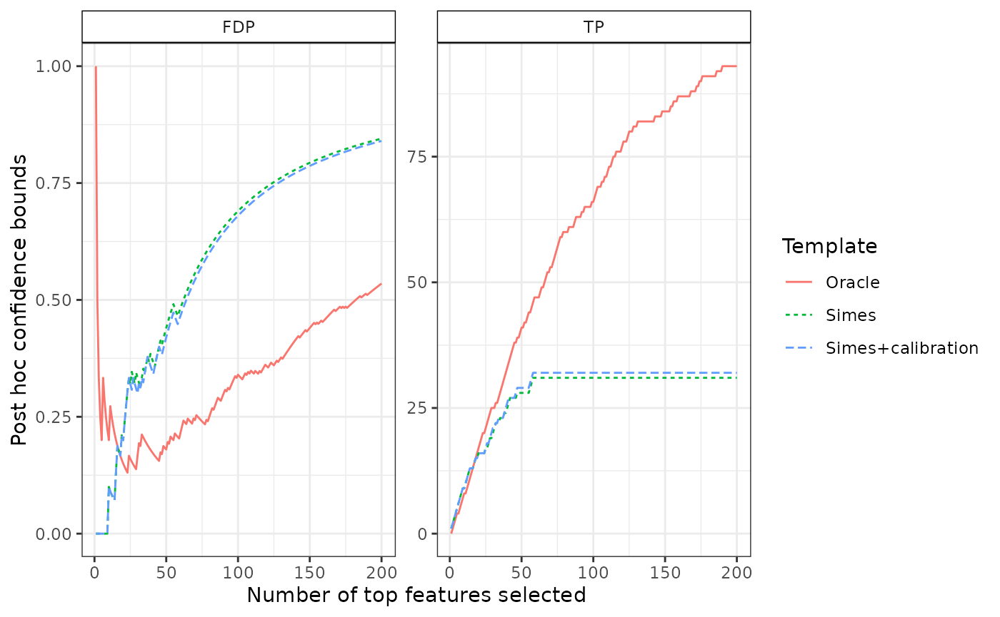

Joint Error Rate calibration
Simulations for one and two-sample tests
P. Neuvial
2018-03-27
Source:vignettes/jointErrorRateCalibration_simulations.Rmd
jointErrorRateCalibration_simulations.RmdThis vignettes illustrates the following points
- simulation of one- and two-sample Gaussian equi-correlated observations
- computation of test statistics by randomization
- calibration of Joint-Family-Wise Error Rate (JER) thresholds
We start with two-sample tests because we believe they are used more frequently.
library("sanssouci")
#set.seed(0xBEEF) # for reproducibility
library("ggplot2")Parameters:
m <- 5e2
n <- 30
pi0 <- 0.8
rho <- 0.3
SNR <- 3We use the function SansSouciSim to generate Gaussian
equi-correlated samples. We then ‘fit’ the resulting SansSouci
object
Two-sample tests
Simulation
obj <- SansSouciSim(m, rho, n, pi0, SNR = SNR, prob = 0.5)
obj## 'SansSouci' object:
## Number of hypotheses: 500
## Number of observations: 30
## 2-sample data
##
## Truth:
## 100 false null hypotheses (signals) out of 500 (pi0=0.8)We perform JER calibration using the linear (Simes) template , where for
where is the cdf of the distribution. Note that is the one-sided -value associated to the test statistics .
Calibration
B <- 1000
alpha <- 0.2
cal <- fit(obj, alpha = alpha, B = B, family = "Simes")
cal## 'SansSouci' object:
## Number of hypotheses: 500
## Number of observations: 30
## 2-sample data
##
## Truth:
## 100 false null hypotheses (signals) out of 500 (pi0=0.8)
## Parameters:
## Test function: rowWelchTests
## Number of permutations: B=1000
## Significance level: alpha=0.2
## Reference family: Simes
## (of size: K=500)
##
## Output:
## Calibration parameter: lambda=0.2051593The output of the calibration is the following SansSouci
object. In particular:
-
cal$inputcontains the input simulated data (and the associated truth) -
cal$paramcontains the calibration parameters -
cal$outputcontains the output of the calibration, including-
p.values: test statistics calculated by permutation -
thr: A JER-controlling family of (here ) elements -
lambda: the -calibration parameter
-
Because we are under positive equi-correlation, we expect for the Simes family.
cal$output$lambda## 20%
## 0.2051593
cal$output$lambda > alpha## 20%
## TRUEPost hoc confidence bounds
The fitted SansSouci object contains post hoc confidence
bounds:
## x label stat bound
## 1 1 Simes TP 1
## 2 2 Simes TP 2
## 3 3 Simes TP 3
## 4 4 Simes TP 4
## 5 5 Simes TP 5
## 6 6 Simes TP 6We compare it to the true number of false positives among the most significant items, and to the Simes bound without calibration
cal0 <- fit(obj, alpha = alpha, B = 0, family = "Simes")
oracle <- fit(obj, alpha = alpha, family = "Oracle")
confs <- list(Simes = predict(cal0, all = TRUE),
"Simes+calibration" = predict(cal, all = TRUE),
"Oracle" = predict(oracle, all = TRUE))
plotConfCurve(confs, xmax = 200)
One sample tests
The code is identical, except for the line to generate the
observations (where we do not specify a probability of belonging to one
of the two populations using the prob argument); moreover
it is not necessary to specify a vector of categories ‘categ’ in
‘calibrateJER’.
obj <- SansSouciSim(m, rho, n, pi0, SNR = SNR)
obj## 'SansSouci' object:
## Number of hypotheses: 500
## Number of observations: 30
## 1-sample data
##
## Truth:
## 100 false null hypotheses (signals) out of 500 (pi0=0.8)
cal <- fit(obj, alpha = alpha, B = B, family = "Simes")
cal## 'SansSouci' object:
## Number of hypotheses: 500
## Number of observations: 30
## 1-sample data
##
## Truth:
## 100 false null hypotheses (signals) out of 500 (pi0=0.8)
## Parameters:
## Test function: rowZTests
## Number of permutations: B=1000
## Significance level: alpha=0.2
## Reference family: Simes
## (of size: K=500)
##
## Output:
## Calibration parameter: lambda=0.382704Again we expect .
Confidence curves
The associated confidence curves are displayed below:
cal0 <- fit(obj, alpha = alpha, B = 0, family = "Simes")
oracle <- fit(obj, alpha = alpha, family = "Oracle")
confs <- list(Simes = predict(cal0, all = TRUE),
"Simes+calibration" = predict(cal, all = TRUE),
"Oracle" = predict(oracle, all = TRUE))
plotConfCurve(confs)
Session information
## R version 4.5.0 (2025-04-11)
## Platform: x86_64-pc-linux-gnu
## Running under: Ubuntu 24.04.2 LTS
##
## Matrix products: default
## BLAS: /usr/lib/x86_64-linux-gnu/openblas-pthread/libblas.so.3
## LAPACK: /usr/lib/x86_64-linux-gnu/openblas-pthread/libopenblasp-r0.3.26.so; LAPACK version 3.12.0
##
## locale:
## [1] LC_CTYPE=C.UTF-8 LC_NUMERIC=C LC_TIME=C.UTF-8
## [4] LC_COLLATE=C.UTF-8 LC_MONETARY=C.UTF-8 LC_MESSAGES=C.UTF-8
## [7] LC_PAPER=C.UTF-8 LC_NAME=C LC_ADDRESS=C
## [10] LC_TELEPHONE=C LC_MEASUREMENT=C.UTF-8 LC_IDENTIFICATION=C
##
## time zone: UTC
## tzcode source: system (glibc)
##
## attached base packages:
## [1] stats graphics grDevices utils datasets methods base
##
## other attached packages:
## [1] ggplot2_3.5.2 sanssouci_0.14.0
##
## loaded via a namespace (and not attached):
## [1] Matrix_1.7-3 gtable_0.3.6 jsonlite_2.0.0 compiler_4.5.0
## [5] Rcpp_1.0.14 jquerylib_0.1.4 systemfonts_1.2.3 scales_1.4.0
## [9] textshaping_1.0.1 yaml_2.3.10 fastmap_1.2.0 lattice_0.22-6
## [13] R6_2.6.1 labeling_0.4.3 generics_0.1.3 knitr_1.50
## [17] tibble_3.2.1 desc_1.4.3 bslib_0.9.0 pillar_1.10.2
## [21] RColorBrewer_1.1-3 rlang_1.1.6 cachem_1.1.0 xfun_0.52
## [25] fs_1.6.6 sass_0.4.10 cli_3.6.5 pkgdown_2.1.2
## [29] withr_3.0.2 magrittr_2.0.3 matrixTests_0.2.3 digest_0.6.37
## [33] grid_4.5.0 lifecycle_1.0.4 vctrs_0.6.5 evaluate_1.0.3
## [37] glue_1.8.0 farver_2.1.2 ragg_1.4.0 rmarkdown_2.29
## [41] matrixStats_1.5.0 tools_4.5.0 pkgconfig_2.0.3 htmltools_0.5.8.1